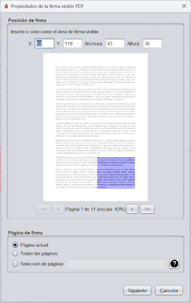

Al habilitar la creación de firmas visibles PDF, se dará al usuario la posibilidad de seleccionar un área de firma sobre el PDF que vaya a firmar en formato PAdES.

Este menú permite utilizar el ratón para seleccionar un área rectanguar de una de las páginas del PDF.
El área de firma desaparecera al cambiar de pantalla del PDF. Seleccione el áre para la firma visible del PDF y a continuación, pulse el botón "Siguiente".
A continuación, se mostrará una nueva ventana en la que el usuario podrá configurar el aspecto de la firma.
Este interfaz permite configurar las siguientes propiedades para la firma visible:
Para la configuración del texto que se desea mostrar en la firma es posible utilizar serie de palabras clave que serán sustituidas por los textos apropiados del titular o emisor del certificado de firma en el momento de firmar. Estos son:
Nombre común (CN, Common Name) dentro del X.500 Principal del titular del certificado de firma.
Nombre común (CN, Common Name) dentro del X.500 Principal del emisor del certificado de firma.
Número de serie del certificado de firma.
Fecha de la firma, donde PATRÓN debe indicar el formato en el que debe mostrarse la fecha, siguiendo el esquema definido por Oracle para la clase SimpleDateFormat.
Nombre del titular (G, Given Name) declarado en el certificado. Este valor podría no aparecer en el certificado, en cuyo caso, el patrón se sustituirá por cadena vacía.
Apellidos del titular (SN, Surname) declarado en el certificado. Este valor podría no aparecer en el certificado, en cuyo caso, el patrón se sustituirá por cadena vacía.
Organización (O, Organization) del titular declarada en el certificado. Este valor podría no aparecer en el certificado, en cuyo caso, el patrón se sustituirá por cadena vacía.
Razón por la que se firma el PDF. Este valor podría no aparecer en el certificado, en cuyo caso, el patrón se sustituirá por cadena vacía.
Ciudad en la que se firma el PDF. Este valor podría no aparecer en el certificado, en cuyo caso, el patrón se sustituirá por cadena vacía.
Información de contacto del firmante del PDF. Este valor podría no aparecer en el certificado, en cuyo caso, el patrón se sustituirá por cadena vacía.
La casilla "Recordar configuración" permite guardar la configuración establecida (texto, imagen y estilos) para utilizarla en las siguientes firmas. El botón "Restaurar configuración por defecto" devolverá la configuración del panel a los valores por defecto.
Si no se desea agregar una firma visible al PDF, antes de pulsar el botón firmar en la pantalla de firma, asegúrese de que no se encuentra seleccionada la casilla "Hacer la firma visible dentro del PDF".
Al habilitar la inserción de marcas visibles en el PDF, se dará al usuario la posibilidad de seleccionar un área sobre el PDF que vaya a firmar.

Este menú permite utilizar el ratón para seleccionar un área rectangular en una o todas las páginas del PDF.
El área de marca desaparecera al cambiar de página del PDF. Seleccione la página, imagen y área para la marca visible en el PDF y a continuación, pulse el botón "Aceptar".
Si no se desea agregar una marca visible al PDF, antes de pulsar el botón firmar en la pantalla de firma, asegúrese de que no se encuentra seleccionada la casilla "Insertar una marca visible dentro del PDF".